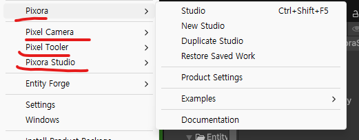
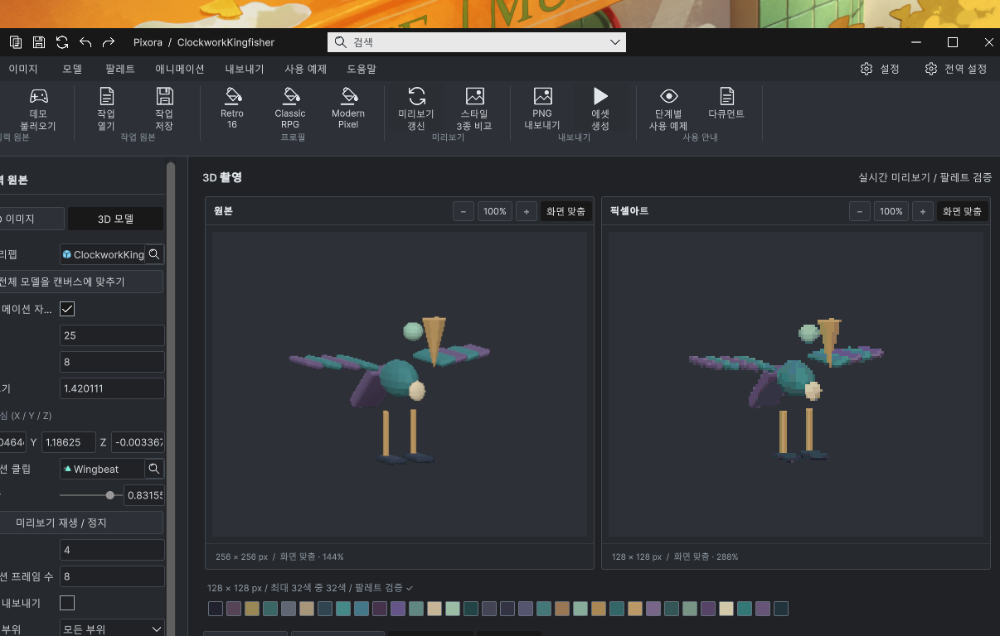

Tracefolio REPORTS & ISSUES
Tracefolio REPORTS & ISSUESImage Maker 이름 변경·세 모듈 메뉴 정리·예제 변환 수정
검증 대기구형 메뉴·중복 허브를 제거하고 Image Maker·Pixel Camera·Foliage로 정리했습니다. 모델 변환 중복을 수정하고 정적 검증했습니다.
작업 결과
코드 정리와 정적 검증은 완료했습니다. Tools → TurnRoom → Pixora Studio 아래 Image Maker·Pixel Camera·Foliage 세 명령만 등록됩니다. 실제 Unity 화면 검증은 보류입니다.
변경 내용
적용 내용
Image Studio와 이전 Pixora 모듈의 표시 이름을 Image Maker로 변경했습니다. 제품명 Pixora Studio는 유지합니다. 모듈은 3D 모델·애니메이션을2D 픽셀 스프라이트로 제작하고 이미지를 픽셀 아트로 변환합니다. 창·Inspector·9언어 문구·오프라인 문서를 갱신했고, 기존 파일을 보존하려고 내부 타입·어셈블리·GUID·설정 키는 유지했습니다.
Pixora·Pixel Tooler·독립 Pixel Camera 메뉴 루트, 중복 Overview 창·UXML·카탈로그·어셈블리, Open Docked 명령과 구형 일회성 통합 도구를 제거했습니다. 필요한 기능은 해당 창의 리본에 유지하고 F5/F7/F8/F11 단축키도 보존했습니다. 남은 검증·내보내기·필수 URP 설정 명령은 Development 경로입니다.
식생 시작 화면은 로고·제목·한 줄 설명·시작/열기 버튼으로 정리하고 멀리 떨어진 중복 하단 안내문을 제거했습니다. 저장·열기 입력 단계 폭을 제한하고 중앙 정렬했으며9언어 안내를 맞췄습니다.



검증
모델 원인: 정규화 전 FBX, 현재 FBX, 현재 프리팹을 실제 바이너리/직렬화 데이터로 대조했습니다. 머리 스케일(.31/.32/.30)과 몸체 스케일(.39/.54/.42)이 메시 정점에 베이크된 뒤 프리팹에도 남아 이중 적용됐습니다. 부리의90도 회전도 같은 방식으로 중복됐습니다.
ClockworkKingfisher와 TidewatchObservatory의 Image Maker·Camera용 프리팹4개, 메시 Transform82개를 정규화된 FBX에 맞췄습니다. 부모 그룹·날개 피벗·위치·fileID·메시 참조·애니메이션 경로는 보존했습니다. FBX와 외부 에셋 원본은 수정하지 않았습니다. 실제 렌더·애니메이션 재생 결과는 미검증입니다.
정적 검사: 세 모듈 메뉴 정확히3개, 폐기 허브와 구형 경로 참조0, 창 소스22개 목록, 식생 에셋/어셈블리/번역12검사 통과. 보호된 Camera37파일·3개 씬과 식생 씬 보존 검사 통과. 두 UI 카탈로그의9언어 값·중복 키·치환 인자와9개 오프라인 문서 생성을 확인했습니다.
관련 Editor6개 어셈블리를 Unity6000.0.83f1의 실제 Roslyn·참조로 컴파일하여 모두 exit0을 확인했습니다. 초기 _cell 오참조와 옛 복구 콜백 참조 오류는 수정 후 전체 재컴파일했습니다. 컴파일을 실제 Unity 실행 검증으로 취급하지 않습니다.
화면 조작·GUI 신규 실행·재시작·캡처는 수행하지 않았습니다. 기존 문서 스크린샷과 촬영 당시 소스 해시는 보존했으며 최신 화면이라고 갱신하지 않았습니다.
교훈 검토: FBX 정규화 시 원본·정규화 FBX·프리팹 합성을 대조하는 구체적인 검증을 프로젝트 작성 지침에 추가했습니다. 전역의 기존 원본·기하 보존·실제 검증 규칙으로 포괄되어 전역 변경 없음.
남은 사항
실제 메뉴·모든 창과 보조 창·다국어 전환·팔레트 시작→저장→칠하기·모델 자세별 렌더·Undo/Redo·최소화 복원은 화면 조작 재허락 후 확인해야 합니다. 최신 가이드 스크린샷과 판매 미디어의 이전 Image Studio 표기는 아직 재촬영·재출력하지 않았습니다. 배포 패키지 재생성·업로드·최종 제출은 이번에 수행하지 않았습니다.
작업 시간
- 제안 시간: 전체 작업20–35분
- 실제로 완료된 시간: 2026-11-04 20:08:14 KST 시작. 20:46:11 KST까지 구현·컴파일·정적 검증 약38분. 실제 UI·렌더 검증 완료 시각은 없으며 공개 배포 확인은 최종 채팅에 기록.
- XERJ: 실패 — Status node not running. 직전 복구 Search의 node.lock 점유 근거를 유지하고 rg·현재 소스를 대조했습니다.